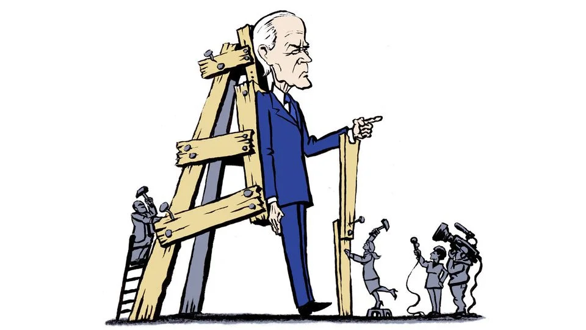
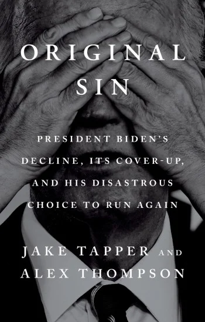

Book Review
Review: “Original Sin”
The palace guard, the collapse in Atlanta, and the perils of presidential insulation

In Greek tragedy, the protagonist’s desperate effort to avert a terrible prophecy is often the very catalyst that seals it. In modern political history, few episodes match the inexorable unraveling chronicled in Original Sin: President Biden's Decline, Its Cover-Up, and His Disastrous Choice to Run Again by CNN chief Washington correspondent Jake Tapper and Axios national political correspondent Alex Thompson.
Drawing on interviews with approximately two hundred White House aides, cabinet secretaries, lawmakers, campaign strategists, and foreign officials, Tapper and Thompson construct a devastating autopsy of Joe Biden's decision to seek a second term. What emerges is not merely a tale of an aging leader struggling with the undeniable physical and cognitive toll of time, but a portrait of institutional collapse: an insulated inner circle that policed dissent, a political party paralyzed by fear of internal fratricide, and a communications apparatus that dismissed legitimate public observation as bad-faith partisan attacks.
Joe Biden launched his successful 2020 bid for the White House with the stated goal of saving the nation from a second Trump presidential term. He, his family, and his senior aides were so convinced that only he could beat Trump again, they lied to themselves, allies, and the public about his condition and limitations.
The Broken Bridge
The foundational premise—the “original sin” of the book’s title—traces back to 2020. During that campaign, Biden explicitly pitched himself as a transitional figure, a steady, experienced hand to guide America out of the turbulent Trump years before handing the mantle to the next generation of leadership. “Look, I view myself as a bridge, not as anything else,” Biden famously declared alongside Kamala Harris, Cory Booker, and Gretchen Whitmer in Michigan.
Yet as the authors document, once inside the West Wing, that transitional rhetoric evaporated. Buoyed by major legislative victories in his first two years and an unexpected midterm resilience in 2022, Biden and his closest confidants convinced themselves that not only was he fit for four more years, but that he alone possessed the unique formula to defeat Donald Trump. What began as a selfless mission to preserve democracy hardened into an indispensable-man complex.
Behind closed doors, however, warning signs had been flickering almost from the outset. Tapper and Thompson recount early moments during the 2020 primary trail when Biden struggled to recall the names of decades-long aides like Mike Donilon. Over the course of his presidency, the gap between “Good Biden” (energized, sharp, and focused) and “Old Biden” (subdued, shuffling, and grasping for words) grew increasingly pronounced.
The Politburo
To manage this reality, power in the West Wing concentrated into an exceptionally small, fierce cadre of loyalists—dubbed by junior staffers and outside officials as “The Politburo.” Anchored by senior counselors Steve Ricchetti, Mike Donilon, Bruce Reed, Anita Dunn, former chief of staff Ron Klain, and top personal gatekeepers Annie Tomasini and Anthony Bernal, alongside First Lady Jill Biden, this inner sanctum erected a protective fortress around the president.

The choreography of concealment was meticulous. Biden’s public schedule was systematically narrowed to an optimal operational window between 10:00 a.m. and 4:00 p.m. Foreign travel was tightly managed to minimize public fatigue. When his stiffening spinal arthritis made navigating the steep, ceremonial stairs of Air Force One precarious, the military quietly shifted him to the lower, shorter airstairs beneath the fuselage. He adopted wide-base Hoka running shoes for stability. Unscripted encounters were curtailed: Biden held fewer press conferences and formal interviews than any modern commander-in-chief, skipping even the customary Super Bowl interview for two consecutive years.
At private high-dollar fundraisers, wealthy donors were surprised to find the president reading standard conversational remarks off teleprompters in private living rooms, followed by tightly controlled photo lines that precluded unscripted policy banter. Aides policed staff interactions, and external poll results showing deep public alarm were rationalized away or kept from the Oval Office.
Cassandras in the Wilderness
Those who dared to break ranks found themselves swiftly ostracized. When Minnesota Congressman Dean Phillips sounded the alarm in 2023, warning that Biden's visible decline made him a catastrophic general-election liability and urging heavyweight governors to enter the primary, he was treated as a pariah by House Democratic leadership and donor networks.
Veteran strategists like David Axelrod and former Obama chief of staff Bill Daley raised similar red flags, only to be branded “bed-wetters” or disloyal by the White House communications shop. When The Wall Street Journal published an exhaustively sourced investigation in early June 2024 detailing how Biden showed signs of slipping in closed-door negotiations on Ukraine aid, the administration mobilized a ferocious counter-offensive, dismissing the reporting as partisan fiction and accusing media outlets of amplifying “cheap fakes”.
Chekhov’s Special Counsel
The turning point arrived in February 2024 with the release of Special Counsel Robert Hur’s report on Biden’s handling of classified documents. While Hur declined to seek criminal charges, his assessment described the president as a “well-meaning, elderly man with a poor memory” who could not recall basic dates, including when his vice presidency began and ended or the precise year his son Beau died.
The White House reacted with fury, declaring open war on its own Justice Department and attacking Hur’s integrity. Yet as Tapper and Thompson make clear, Hur’s observations were neither malicious nor inaccurate; they were the first unredacted, official confirmation of what dozens of senior officials had witnessed for months in private. Instead of using the Hur report as a moment of reckoning, the West Wing doubled down on defiance.
In the narrative of Joe Biden and his decline, Chekhov’s gun is Special Counsel Robert Hur, appointed in 2023. The gun goes off in 2024.
Atlanta and “The Bad Times”
The climax of the book—and of Biden’s political career—unfolded on June 27, 2024, in Atlanta. In an effort to reset the race and prove his vigor, Biden’s campaign had engineered an unprecedentedly early debate against Donald Trump, moderated by Tapper and Dana Bash on CNN. Because the debate occurred without live audiences, opening statements, or notes, there was nowhere to hide.
From the opening minutes, as a raspy, pale Biden struggled to finish sentences and mumbled that he had “finally beat Medicare,” the carefully constructed edifice collapsed in real time. Tapper provides a gripping, behind-the-scenes perspective of the television studio and the immediate wave of horror that rippled through Democratic ranks. Former press secretary Jen Psaki, watching on a livestream, was rendered speechless before admitting, “This is a fucking disaster.”

What followed were twenty-four grueling days that staffers came to call “The Bad Times.” While Biden and his inner circle initially attempted to gaslight the public, blaming a cold, over-preparation at Camp David, and European jet lag, the dam had broken. Global media reaction was swift and devastating. George Clooney published his landmark New York Times op-ed, while Nancy Pelosi, Chuck Schumer, Hakeem Jeffries, and Barack Obama conducted a quiet, surgical campaign of persuasion. Isolated with COVID-19 at his vacation home in Rehoboth Beach, Delaware, and facing catastrophic internal polling, Biden finally capitulated on July 21, announcing his withdrawal via a posted letter.
Echoes of History
In their concluding synthesis, Tapper and Thompson place Biden’s decline in a broader constitutional and historical lineage. From Edith Wilson running the executive branch after Woodrow Wilson’s debilitating stroke in 1919, to Franklin D. Roosevelt concealing his terminal heart failure during the 1944 election, to Ronald Reagan’s aides quietly monitoring him for Alzheimer’s in his second term, the American presidency has repeatedly proven vulnerable to the frailties of aging leaders.
The structural vulnerability, the authors argue, lies in the imperial nature of the modern presidency. Surrounded by aides whose entire careers and social standing depend on the patronage of one individual, the executive branch inevitably becomes an echo chamber. The 25th Amendment, designed after the JFK assassination to handle presidential disability, remains practically unusable when a president’s family and cabinet choose loyalty over constitutional duty.
Written with narrative urgency, deep sourcing, and rigorous reportorial balance, Original Sin is essential reading for anyone seeking to understand the 2024 election. It serves as both a gripping political thriller and a sobering warning about the perils of unchecked executive insulation.
About the authors
Jake Tapper is the lead Washington anchor and chief Washington correspondent for CNN, hosting The Lead with Jake Tapper and co-hosting State of the Union. A veteran journalist and author of the bestselling military history The Outpost as well as several acclaimed political thrillers, he co-moderated the historic June 2024 presidential debate.
Alex Thompson is a national political correspondent for Axios and a CNN political contributor. He previously created Politico’s West Wing Playbook newsletter and worked for The New York Times and Vice News, establishing himself as one of the preeminent chroniclers of the Biden administration.